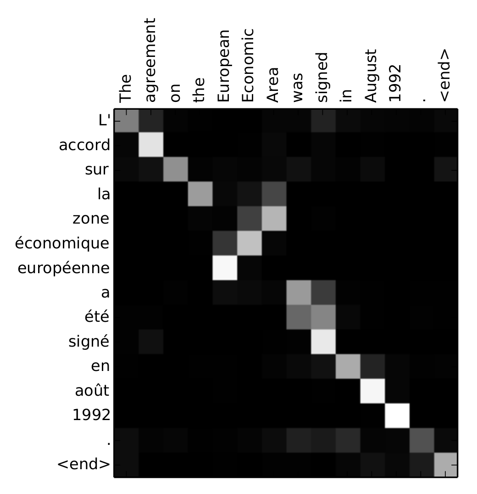
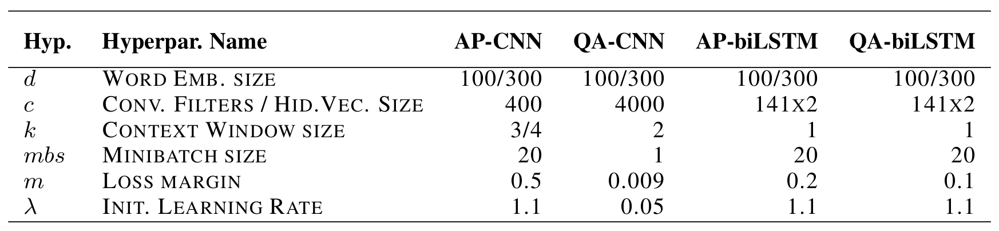

注意力機制(Attention Mechanism)是現今自然語言處理(Natural Language Processing, NLP)領域發展當中重要的一環，它幫助解決了 RNN 本身記憶力受限的問題，這樣的機制使得模型在原有 NLP 的任務上表現更好。若是要從一開始了解 Attention 的概念，應當從 Seq2Seq Model 說起，因此下面將以 Seq2Seq 做為起始的說明，接著再看到 Attention 如何被帶到 Seq2Seq 的模型之中，最後再來看看關於 Attention 在問答模型(QA)中的應用，以此來比較在不同情境中 Attention 可以如何被利用，以下介紹將基於下面所列的參考文獻做為說明基礎：
- Seq2Seq Model:
- Basic Attention Mechanism:
- Attention applied in QA Problem
Seq2Seq Model
我們日常用來溝通的語言，例如「你好嗎？」、「今天天氣不錯！」, 可以被看待成一連串的字詞依照出現時間先後順序所做的排列，也就是時間序列(Time series)。在 NLP 領域中，有一類任務所面對的問題是輸入是一串序列(Input Sequence)：\(x_1, x_2, ..., x_S\)，目標的輸出也是一串序列(Target Sequence)：\(y_1, y_2, ..., y_T\), 而且特別要注意的是這兩個 Sequence 的長度可以不一樣長，例如機器翻譯(Machine Translation, MT)就屬這類的任務之一，對於這樣輸入是 sequence，輸出也是 sequence 的模型我們稱為 Sequence to Sequence Model，或簡寫為 Seq2Seq Model:
Fig. 1. Seq2Seq Model
首先, 對於 Seq2Seq 這樣的任務，一般的 Deep Neural Network 是做不到的(雖然現在有了 Transformer 但目前先不考慮它)，其中一個原因是「順序」對於 Sequence 是有意義的，但是若我們將 Sequence 這樣的資料送進一般的 Deep Nerual Network，模型就只會依據每一次送進模型的資料給出相應的 Output，資料送進模型的順序並不會對 Output 有任何影響，因此要完成 Seq2Seq 這樣的任務就需要用到有循環結構的 RNN 模型。
另一方面，即便考慮了 RNN 模型，我們還是會面對到 Input Sequence: \(x_1, x_2, ..., x_S\) 與 Target Sequence: \(y_1, y_2, ..., y_T\) 長度不一致的情形。 因此在 Sequence to Sequence Learning with Neural Networks 中就提出以下兩個方案來完成 Seq2Seq 的任務：
- 以 LSTM 做為神經網路模型的架構
- 將 Input Sequence: \(x_1, x_2, ..., x_S\) 透過 RNN 先 map 到一個固定長度的 vector: \(v\)，接著再將 \(v\) 透過另一個 RNN map 到 Target Sequence: \(y_1, y_2, ..., y_T\)，如此就能處理 Input Sequence 與 Target Sequence 長度不一致一情形
Fig. 2. Seq2Seq Model with RNN structure
Seq2Seq 模型的架構就如 Fig. 2. 所呈現， 和 分別表示句子的開始(Begin of Sentence) 和結束(End of Sentence)，整體模型的架構可以拆解為兩個主要的子架構：Encoder 和 Decoder
* Encoder：其功用是把 Input Sequence 壓縮至一個固定長度的 Context Vector \(v\)，因此可以把 \(v\) 認定為它夾帶了整個 Input Sequence 必要的資訊。
* Decoder：以 Context Vector 及 \<BOS> Token 做為 Decoder 的起始輸入，讓 Decoder 參照 Context Vector 等於是讓 Deocder 參照到 Input Sequence 的資訊，以及 \<BOS> 只是單純讓 Decoder 開始根據 Context vector 所夾帶的資訊給出我們期望的 Target Sequence ，隨後 Decoder 的輸出一直到 \<EOS> Token 出現為止。

Fig. 3. Encoder-Decoder Structure
整個模型在做的事就是估計條件機率 \(p(y_1,...,y_T|x_1,...,x_S)\):
\begin{align}
p(y_1,...,y_T|x_1,...,x_S)
&=p(y_1|v)\times
...
\times p(y_T|v,y_1,...,y_{T-1})\\
&=\prod_{t=1}^{T}p(y_t|v,y_1,...y_{t-1})
\end{align}
其中 \(p(y_t|v,y_1,...y_{t-1})\) 取自於 Decoder 部份的 RNN 最後一層以 softmax 輸出的結果。
以上的 Encoder-Decoder 架構也可以有一些其它的變化，例如可以考慮將 Encoder 做出來的 Context vector 給 Decoder 每一個時間點的輸入，這樣子的做法出自於 Learning Phrase Representations using RNN Encoder-Decoder for Statistical Machine Translation 這篇論文，文中稱這樣的架構為 RNN Encoder-Decoder：
Fig. 4. RNN Encoder-Decoder, 其中 Context vector c 皆會做為每一次 Hidden state 及 RNN output 的參考
由 Fig. 4. 不論是 Hidden state 或是 Decoder RNN 的輸出，皆會參考 Context vector \(c\)：
\begin{align}
&h_{t}=f(h_{t-1}, y_{t-1}, c)\\
&p(y_{t}|c,y_1,...,y_{t-1})=g(h_{t},y_{t-1}, c)
\end{align}
其中 \(f\) 和 \(g\) 為 nonlinear activation function 且 g 的輸出端接上 softmax 以讓輸出\(\mathbf{y}\)表現出機率分佈。
Basic Attention Mechanism
以上的 Encoder-Decoder 架構皆是由一個統一的 Context vector(由 Encoder 吃完整個 input sequence 後所輸出的 Hidden state) 送給 Decoder 做為 input sequence 的資訊參考，這個做法所基於的一個前題是 Context vector \(\mathbf{c}\) 必須包含了所有關於 input sequence 的必要資訊，但是實際上 Context vector 能不能包含必要的完整資訊傳送給 Decoder 其實是個問題，這樣的問題源自 RNN 本身的缺陷，也就是記憶能力的受限，尤其是當 input sequence 的長度一長時 sequence 前段的資訊就有可能被遺漏，LSTM 與 GRU 也是針對這個問題對 RNN 來做改良，但還是無法完全避免當 input sequence 長度一長時無法記錄完整資訊的這個問題。
基於以上的問題 Neural Machine Translation by Jointly Learning to Align and Translate 這篇論文提出了 Attention 的做法，讓 Decoder 在每一個時間點的輸出不會只參考固定的 Context vector \(c\),而是一個會變動的 Context vector \(c_t\)，這個變動的 \(c_t\) 會依據 Attention 的機制對 Encoder 每一個時間點的 Hidden state 給予不同程度的關注：

Fig. 5. 結合 Attention 機制的 Encoder-Decoder 架構
這樣的機制釋放了 Encoder 要做出一個包含整個 input sequence 必要資訊的 Context vector 這樣的負擔，並且 Decoder 可以更有效的利用 input sequence 在每一個時間點帶來的資訊，這也使得在 MT 任務上如此的模型架構對於長句的翻譯表現得更好：

Fig. 6. RNNsearch 為結合 Attention 機制的 Encoder-Decoder Model，RNNenc 為沒有使用 Attention 機制的 Encoder-Decoder Model，可以看出來長句子的翻譯上使用 Attention 的模型表現更好
模型架構
設 \(\mathbf{x}=(x_1, ...,x_S)\) 和 \(\mathbf{y}=(y_1, ...,y_T)\) 分別為 input sequence 和 target sequence, 模型一樣分為 Encoder 與 Decoder 兩個部分：
Encoder
Encoder 是一個 Bidirectional RNN, 將 input sequence \((x_1, ...,x_S)\) 分別以順向與逆向送給 RNN 所作出來的 hidden states \(\overrightarrow{h_j}\) 與 \(\overleftarrow{h_j}\) 接併起來形成 \(h_j={[{\overrightarrow{h_j}}^T:{\overleftarrow{h_j}}^T]}^T\)，論文中稱 \(h_j\) 為 \(x_j\) 的 annotation, 所以最後對於 input sequence \(\mathbf{x}\) 我們會有 \(S\) 個 annotations \((h_1, ..., h_S)\)。
Decoder
Decoder 要做的事就是估計條件機率 \(p(y_t|y_1,...,y_{t-1}, \mathbf{x})\), 可將其視為 decoder input \(y_{t-1}\), hidden state \(s_i\), 與 context vetcot \(c_i\) 的一個函數 \(g\):
\begin{align}
p(y_t|y_1,...,y_{t-1}, \mathbf{x})=g(s_t, y_{t-1}, c_t)
\end{align}
其中 \(s_t\) 為在時間 \(t\) 時的一個 RNN hidden state:
\begin{align}
s_t=f(s_{t-1}, y_{t-1}, c_t)
\end{align}
另外要注意到這邊的 Context vector \(c_t\)，它是隨時間變動的，由 Fig. 5. 可以了解 \(c_t\) 會由 \(\alpha_{t,1},...,\alpha_{t,S}\) 與 \(h_1, ..., h_S\) 做 weighted sum 而得，\(\alpha_{t,1},...,\alpha_{t,S}\) 即代表了在 \(t\) 這個時間點 decode 時所參考 encoder 各時間點的 hidden state 的比重，而這些 \(\alpha_{t,j}\) 就是由 Attention mechanism 計算而得，計算的方式並不複雜：
1. 以一個 score function \(\mathrm{score}\) 將上一個時間點的 hidden state \(s_{t-1}\) 與在 Encoder 當中每個時間點的 annotation \(h_j, \, j=1,...,S\) 取得兩者之間的分數 \(\mathrm{score}(s_{t-1},h_j), \, j=1,...,S\), 這個 score function 可以是一個 feedforward network with one hidden layer 論文中的定義如下：
\begin{align}
\mathrm{score}(s_{t-1},h_j)=v_a^T\tanh(W_as_{t-1}+U_ah_j)
\end{align}
論文中稱這個 score function 為 alignment model。
- 接著再將每一個 \(\mathrm{score}(s_{t-1},h_j)\) 做標準化(normalization)，即取得 \(\alpha_{t,j}\):
\begin{align}
\alpha_{t,j}=\frac{\exp(\mathrm{score}(s_{t-1},h_j))}{\sum\limits_{k=1}^S\exp(\mathrm{score}(s_{t-1},h_k))}
\end{align}
最後，Context vector \(c_t=\sum\limits_{j=1}^S\alpha_{t,j}h_j\)
結果呈現
模型實作是以英文翻譯法文為目標，Fig. 7. 中的每一個 pixel 表示 \(\alpha_{t,j}\) 的值(第 j 個 target word(法文)對第 t 個 sorce word(英文) 的 annotation 的權重 \(\alpha\) 值，以灰階表示 0:black, 1:white)

Fig. 7. 英文對於法文的 attention 結果，英文是 source 法文是模型翻譯後的結果
Attention applied in QA Problem
接下來可以再看看另一個 Attention 的例子，這個例子是把 Attention mechanism 加入 QA 的模型中，從而模型達到了更好的表現。任務是給定一個問題 \(q\) 和對於問題 \(q\) 的一池候選答案 \(P = \{a_1, a_2,...,a_p \}\) ，我們要從候選答案中找出正確回答問題 \(q\) 的答案 \(a \in P\)。
對於這樣的問題一種簡單的模型架構做法是可以設計兩條 NN(Neural Network) 路徑，一條作為輸入問題 \(q\) 使用，另一條作為輸入候選答案 \(a\) 使用，當 \(q\) 和 \(a\) 經過各自的 NN 路抽取出各自的 representation \(r_q\) 和 \(r_a\) 後，可以再介由適當的 metric 來比對 \(r_q\) 和 \(r_a\) 的相似度，例如 cosine-similarity ，而正確答案就以相似度與 \(q\) 最高的 \(a\) 來認定。
Fig. 8. 模型內部可採用 CNN 或 LSTM 來取得 representation
模型架構
基本模型架構
以下我們參照 Fig. 8. 來解釋模型架構，首先給定我們的問題 \(q\) 與 候選答案 \(a\)，\(q\) 和 \(a\) 各自包合了 \(M\) 和 \(L\) 個 tokens(也就是可以理解為 \(q\) 和 \(a\) 兩個敍述各自包含了多少個字)：
-
\(q\) 和 \(a\) 會先通過各自的 word embedding layer, 每一個 token 會變成一個 word vector ，以 \(q^{emb}=\{r^{w_1}, r^{w_2}, ..., r^{w_M}\}\) 和 \(a^{emb}=\{r^{w_1}, r^{w_2}, ..., r^{w_L}\}\) 表示，其中每個 \(r^w \in \mathbb{R}^d\)。
-
接著可以使用 CNN 或 LSTM 來處理 word embedding 後的序列:
-
我們先以使用 CNN 的方式作為說明, 以 \(q^{emb}=\{r^{w_1}, r^{w_2}, ..., r^{w_M}\}\) 中的每一個 word embedding \(r^{w_m}\) 為中心將前後總共 \(k\) 個 word embedding 接併起來，形成 \(z_m \in \mathbb{R}^{dk}\)(所以 \(k\) 就是 CNN 的 filter size)，定義矩陣 \(Z^q=[z_1,z_2,...,z_M]\)，我們也可設定 convolution 的 filter 數量，我們定為 \(c\)，所以 CNN 的運算即為：
\begin{align}
Q=W^1Z^q+b^1
\end{align}
其中 \(W^1\) 與 \(b^1\) 為需要學習的參數，所得到的矩陣 \(Q \in \mathbb{R}^{c \times M}\) 的第 \(m\) 個 column 包含了透過 context window(即 filter)在第 \(m\) 個字周圍萃取出來的特徵。
-
同樣的做法也可用在 \(a^{emb}=\{r^{w_1}, r^{w_2}, ..., r^{w_L}\}\) 上，使用相同的 NN 參數 \(W^1\) 和 \(b^1\) 計算矩陣 \(A \in \mathbb{R}^{c \times L}\):
\begin{align}
A=W^1Z^a+b^1
\end{align}
-
LSTM 的做法也是類似，不過是透過雙向的 LSTM (biLSTM) 將順向與逆向每一個 time step 的 hiddem states 接併起來形成 \(h_t = \overrightarrow{h_t}||\overleftarrow{h_t}\)，最後 \(Q\) 與 \(A\) 的 column 就是由各自 \(q\) 與 \(a\) 作為輸入所得的 hidden states 所組成的矩陣。
-
在取得矩陣 \(Q\) 與 \(A\) 之後，我們可以對各別矩陣採取 column-wise max-pooling，隨後再套用 \(\tanh\) 作為 activation function 以取得 \(q\) 與 \(a\) 的 representations \(r^q\) 與 \(r^a\):
\begin{align}
r^q = \tanh(\max\limits_{1<m<M}[Q_{j,m}])\\
r^a = \tanh(\max\limits_{1<m<L}[A_{j,l}])
\end{align}
-
最後再取得 \(r^q\) 與 \(r^a\) 的 cosine-similarity，作為 \(q\) 與 \(a\) 比對的分數:
\begin{align}
s(q,a)=\frac{r^q \cdot r^q}{||r^q||||r^a||}
\end{align}
在模型訓練上採用 triplet-loss:
\begin{align}
L = \max\{0, m-s(q,a^+)+s(q,a^-)\}
\end{align}
其中 \(a^+\) 代表對於問題 \(q\) 而言正確的答案，\(a^-\) 代表錯誤的答案，\(m\) 的意思是 margin，整個 loss function 的用意是讓 \(s(q,a^+)\) 與 \(s(q,a^-)\) 的差距高過一個 margin \(m\) 以上，以至於模型在所謂的 latent space 中能更容易區分 \(a^+\) 與 \(a^-\)。
Attention Pooling
以上所談的模型架構是沒加入 Attention mechanism 以前的基本做法，此篇論文提出 Attentive Pooling(AP) 的方法，此方法是一種 two-way Attention mechanism, 這裡的 two-way 應該是兩個方向的意思，表示這樣的機制不僅會讓 \(q\) attend to \(a\) 同時也會讓 \(a\) attend to \(q\).
由 Fig. 9. AP 的機制是在原先的模型架構上取得 \(Q\) 和 \(A\) 矩陣之後計算
\begin{align}
G=\tanh(Q^TUA)
\end{align}
其中 \(U \in \mathbb{R}^{c \times c}\) 是需要透過 NN 學習的參數。

Fig. 9. Attentive Pooling Networks
這邊我們可以來看看 \(Q^TUA\) 的運算：
設
\begin{align}
Q^T=
\left[
\begin{array}{ccc}
-q_1^T- \\
-q_2^T- \\
\vdots \\
-q_M^T-
\end{array}
\right], \,
A=
\left[
\begin{array}{cccc}
| & | & & |\\
a_1 & a_2 &\dots& a_L \\
| & | & & |\\
\end{array}
\right]
\end{align}
其中 \(q_i^T \in \mathbb{R}^{1 \times c},
a_i \in \mathbb{R}^{c \times 1}\)。
\begin{align}
Q^TUA
&=Q^T
\left[
\begin{array}{cccc}
| & | & & |\\
Ua_1 & Ua_2 &\dots& Ua_L \\
| & | & & |\\
\end{array}
\right] \\
&=
\left[
\begin{array}{cccc}
q_1^TUa_1 & q_1^TUa_2 & \dots & q_1^TUa_L \\
q_2^TUa_1 & q_2^TUa_2 & \dots & q_2^TUa_L \\
\vdots & \vdots & \dots & \vdots \\
q_M^TUa_1 & q_M^TUa_2 & \dots & q_M^TUa_L
\end{array}
\right]
\end{align}
由以上的計算，我們看到每一列(row)是由一個特定的 \(q_i\) 與每一個 \(Ua_j, \, j=1,2,...,L\) 的內積，所以第 \(i\) 列的這些內積值 \(q_i^TUa_1, \, q_i^TUa_2, \,...,\, q_i^TUa_L\) 可視為特定的 \(q_i\) 對個別 \(a_j, \, j=1,2,...,L\) 的關注分數。同理，若是由每一行(column)來看，每一行是由特定的 \(a_j\) 與每一個 \(U^Tq_i, \, i=1,2,...,M\) 的內積，因此第 \(j\) 行的內積值 \((U^Tq_1)^Ta_j, \, (U^Tq_2)^Ta_j, \,..., \, (U^Tq_M)^Ta_j\) 可視為特定的 \(a_j\) 對個別 \(q_i, \, i=1,2,...,M\) 的關注分數。我們計算 \(G\) 如下：
\begin{align}
G=\tanh(Q^TUA)
\end{align}
由以上討論，若對 \(G\) 做 column-wise max-pooling，我們會得到 \(g^q\):
\begin{align}
[g^q]_i=\max\limits_{1 \leq l \leq L}G_{i,l}
\end{align}
其意義表示在問題 \(q\) 的第 \(i\) 個字附近對於整個答案 \(a\) 的 importance score。同樣地，若對 \(G\) 做 row-wise max-pooling，我們會得到 \(g^a\):
\begin{align}
[g^a]_j=\max\limits_{1 \leq m \leq M}G_{m,j}
\end{align}
其意義表示在答案 \(a\) 的第 \(j\) 個字附近對於整個問題 \(q\) 的 importance score。
經過前面的計算分別算出 importance scores \(g^q\) 和 \(g^a\) 之後，接下來就與 Basic Attention Mechanism 中一樣做 normalization:
\begin{align}
&[\sigma^q]_i=\frac{[g^q]_i}{\sum\limits_{m=1}^M[g^q]_m}\\
&[\sigma^a]_j=\frac{[g^a]_j}{\sum\limits_{l=1}^L[g^a]_l}
\end{align}
得到 normalized importance scores \([\sigma^q]_i\) 和 \([\sigma^a]_j\) 之後，我們要做的最後一步就是將每個 score 作為對應到 \(q_i\) 和 \(a_j\) 的權重然後計算其加權平均, 即得到最終的 representations \(r^q\) 和 \(r^a\)：
\begin{align}
r^q&=[\sigma^q]_1q_1+[\sigma^q]_2q_2+...+[\sigma^q]_Mq_M\\
&=Q\sigma^q
\end{align}
同理，\(r^a=A\sigma^a\)。
結果
在加入了 AP 機制以後, 由 Fig. 10. 可以看到不論是 AP-CNN 或是 AP-BILSTM 表現不僅比原來的 QA-CNN 與 QA-BILSTM 好，也贏過了當時的 SOTA(state-of-the-art) (Feng et al.,2015) 與 (Tan et al., 2015)。

Fig. 10. 不同模型在 InsuranceQA dataset 上的準確度
不僅僅是準確度的提升，由 Fig. 11. 加入 Attention 機制後的 AP-CNN 所需要的參數量比起 QA-CNN 來得更少。

Fig. 11. 各個模型的超參數設定
同時也可以看到一般而言準確度會隨著 Answer 的長度逐漸降低，但是 AP-CNN 下降的幅度卻沒有 QA-CNN 來得多。
Fig. 12. 隨著 Answer 長度增加模型的準確度表現
最後由 Fig. 13. 也可以看到對於 AP-CNN 正確回答的 Question 與 Answer ，Attention 對 Question 與 Ansewer 各部位所關注的程度, 其中顏色愈深表示關注的程度愈大。

Fig. 13. Attention 關注度的 heat map
References
- [Sutskever, et al. 2014] Sequence to Sequence Learning with Neural Networks
- [KyungHyun Cho, et al. 2014] Learning Phrase Representations using RNN Encoder-Decoder for Statistical Machine Translation
- [Dzmitry Bahdanau, et al. 2015] Neural Machine Translation by Jointly Learning to Align and Translate
- [Cicero dos Santos, et al. 2016] Attentive Pooling Networks
- [蘑菇先生學習記] Attention in Deep Learning
- [Lil'Log] Attention? Attention!